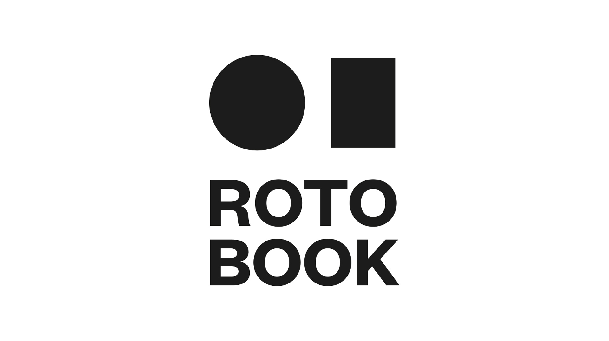
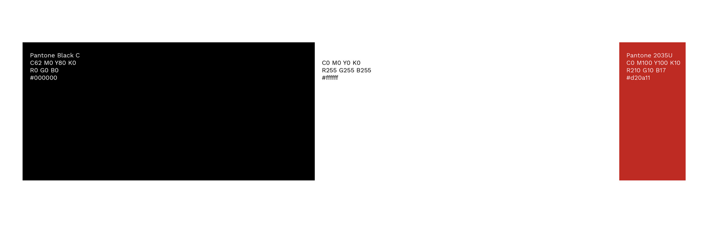
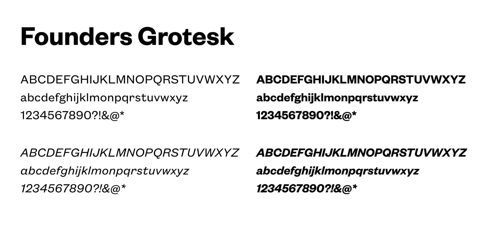
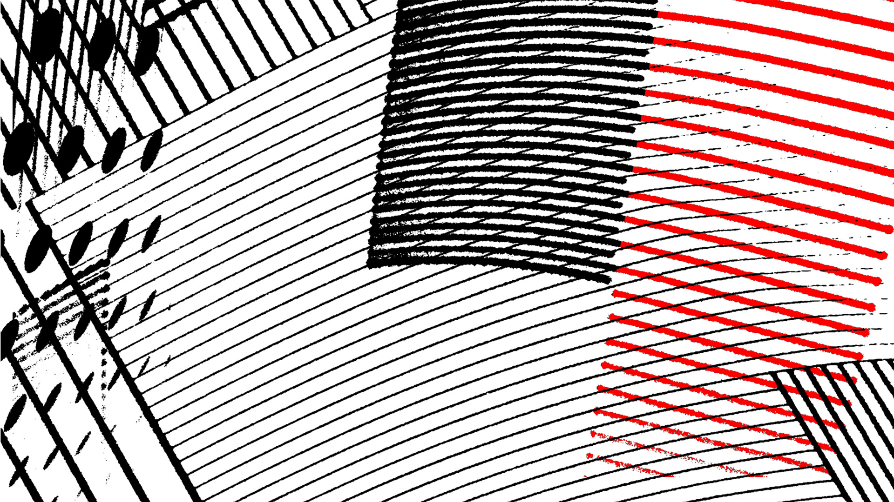
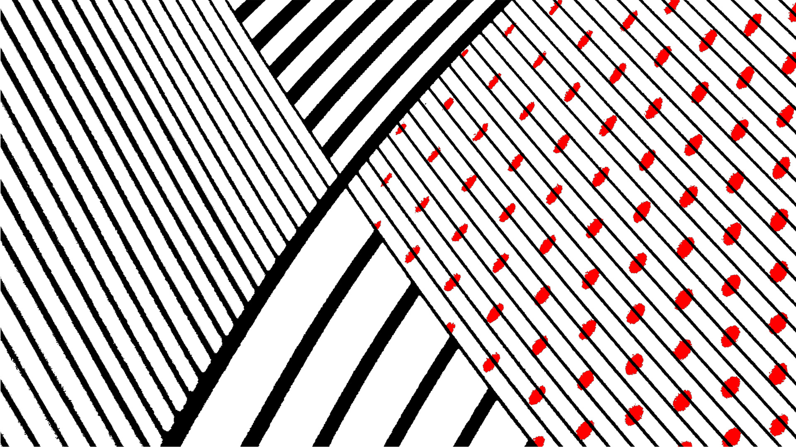
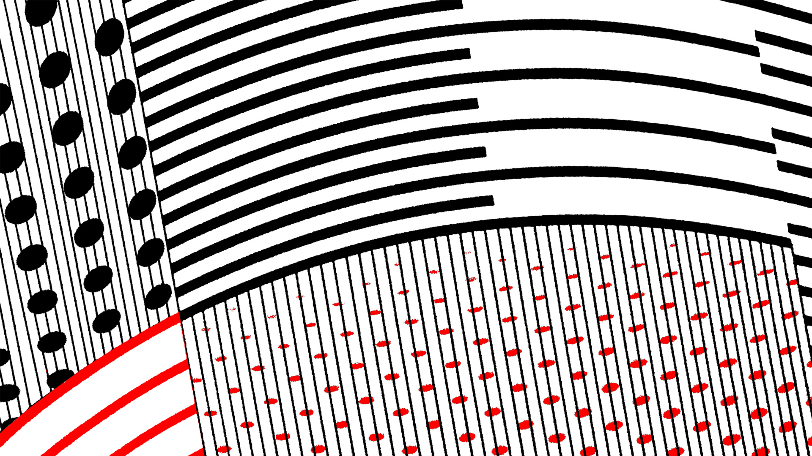
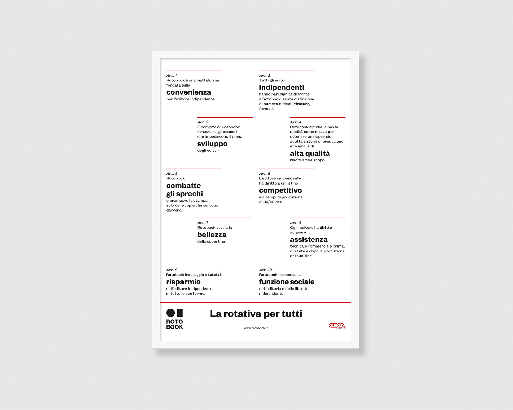
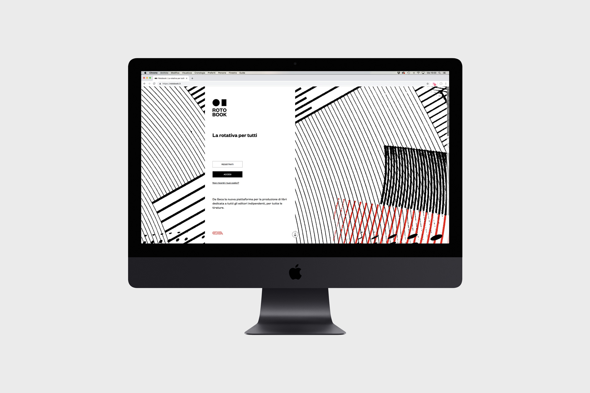
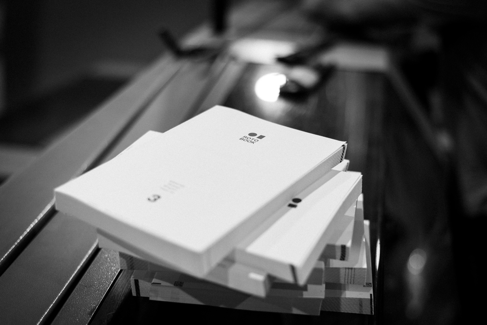
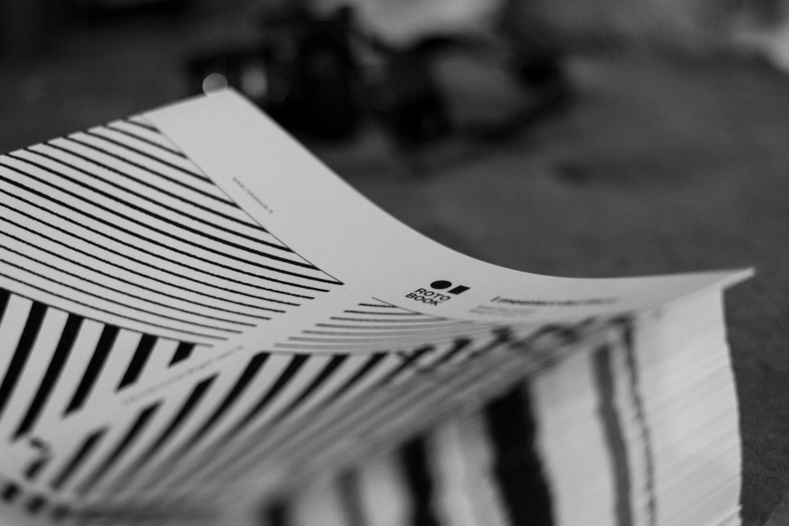
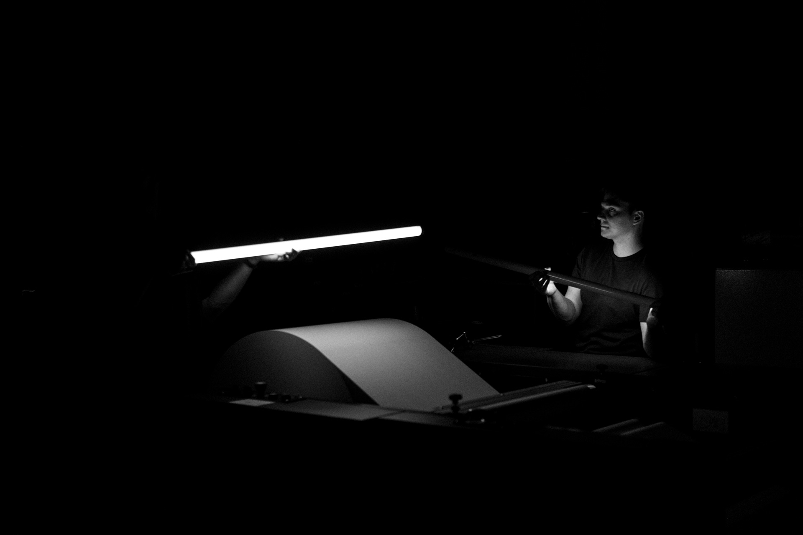
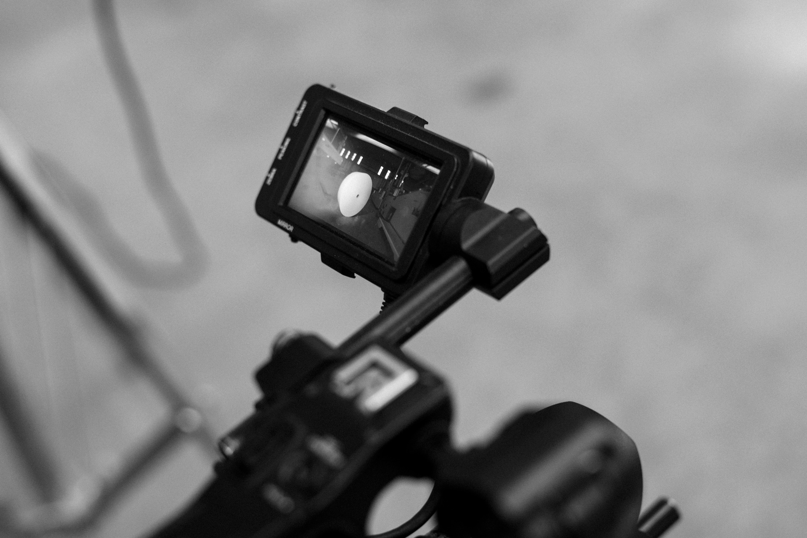
We handled the development of the visual identity and the positioning, helping Geca to define the key messages and the “political manifesto”.
We also managed the concept and production of some videos to launch the new service.
The design enhances the black and white, printing process features of Rotobook, creating a simple, minimal and at the same time very impactful language. The logotype is inspired by the two key elements of the printing technique, which also compose the naming: the paper roll and the book. These two elements were visually represented in two geometric shapes, a circle and a rectangle, which together compose the emblem.
The font for the logotype is the Founders Grotesk di Klim Type. The color palette also includes red, as a reference to Geca.
From a strategic point of view, we defined together with Geca the important topics connected to Rotobook and its communication, summarized in this key message “La rotativa per tutti”. Through this ten-point “political manifesto”, Rotobook shares its philosophy and defines the key elements of the service.
We worked together with Geca to launch their new printing service creating an emotional video about the creation production of a book. Geca invited us for one night, turning the production area into a film set.
A quick sequence of frames catapult us inside the production process: from the roll of paper to inking, from signature mark to bookbinding, up to the cover, the viewer sees close-up the book production, discovering a fast, accurate and automated mechanism that never ceases to amaze.
The design enhances the black and white, printing process features of Rotobook, creating a simple, minimal and at the same time very impactful language. The logotype is inspired by the two key elements of the printing technique, which also compose the naming: the paper roll and the book. These two elements were visually represented in two geometric shapes, a circle and a rectangle, which together compose the emblem.
The font for the logotype is the Founders Grotesk di Klim Type. The color palette also includes red, as a reference to Geca.
From a strategic point of view, we defined together with Geca the important topics connected to Rotobook and its communication, summarized in this key message “La rotativa per tutti”. Through this ten-point “political manifesto”, Rotobook shares its philosophy and defines the key elements of the service.
We worked together with Geca to launch their new printing service creating an emotional video about the creation production of a book. Geca invited us for one night, turning the production area into a film set.
A quick sequence of frames catapult us inside the production process: from the roll of paper to inking, from signature mark to bookbinding, up to the cover, the viewer sees close-up the book production, discovering a fast, accurate and automated mechanism that never ceases to amaze.